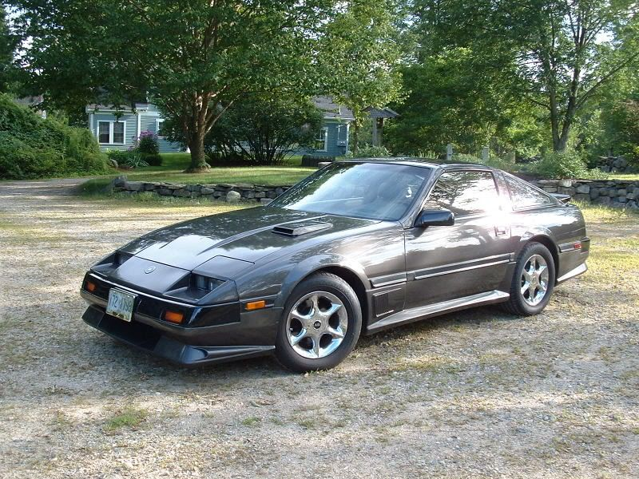

-
black with silver stripes and white accents ? -
red 85t with black "racing stripes"
Feel free to critisize/photoshop.
It may not be a Z, but it's still got a turbo… -
How about dark pewter. Looks cleaner than black. Here is a picture of mine and it had not been washed in over 2 months when I took the picture. In contrast, my 93 NA (black) looks dirty as soon as I am finished washing it.
Restore it, Don't crush it. They don't make them like this anymore.
Scott
85 Turbo, original owner, restored
93 NA Babied

-
hehe, it winks :wink:Domdogg123 wrote: red 85t with black "racing stripes"
Feel free to critisize/photoshop.

Terrible idea putting those wheels on… -
The only thing that bugs me is how it overlaps onto the headlights the tiniest bit… -
this is almost the color I'm going with when I get to that point in my projectFlyingT wrote: How about dark pewter. Looks cleaner than black. Here is a picture of mine and it had not been washed in over 2 months when I took the picture. In contrast, my 93 NA (black) looks dirty as soon as I am finished washing it. -
I actually like the racing stripes a lot!!!!!!!
Do they fall down the sides of the car?
Why not switch it up and go Gm metallic charcoal and a wide single black stripe.........
Racing stripes only seem complete to me if they start out at the bottom of the car in the front and go all the way to the muffler.Who are you to tell me my uninformed opinion is wrong?!?!?
Expert: He who has made all the mistakes there is to make in a given field. -
It may not be a Z, but it's still got a turbo…

Copyright © 2006–. All rights reserved. Privacy Policy